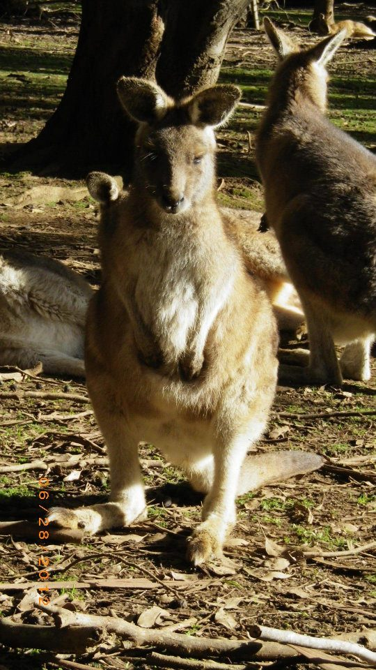
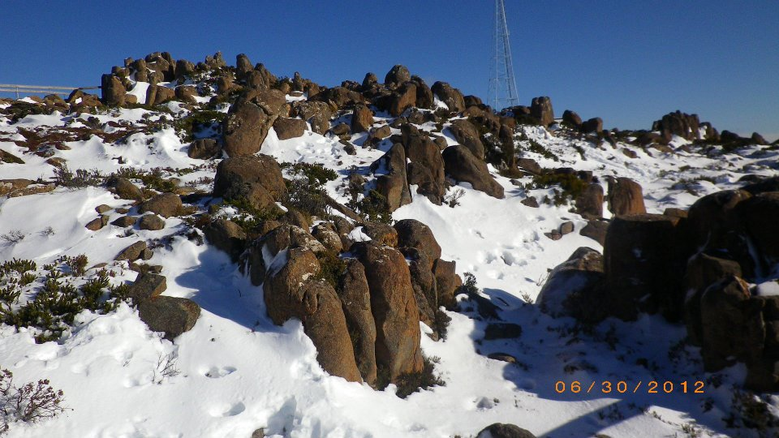
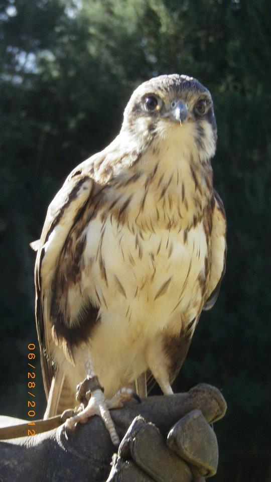
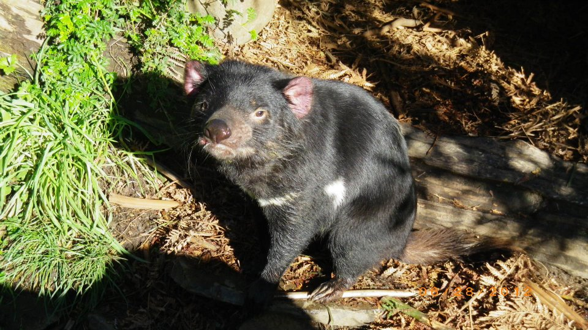
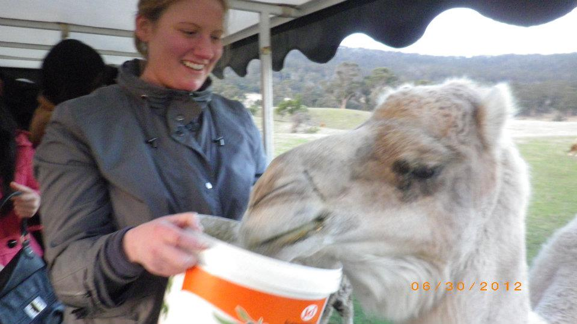
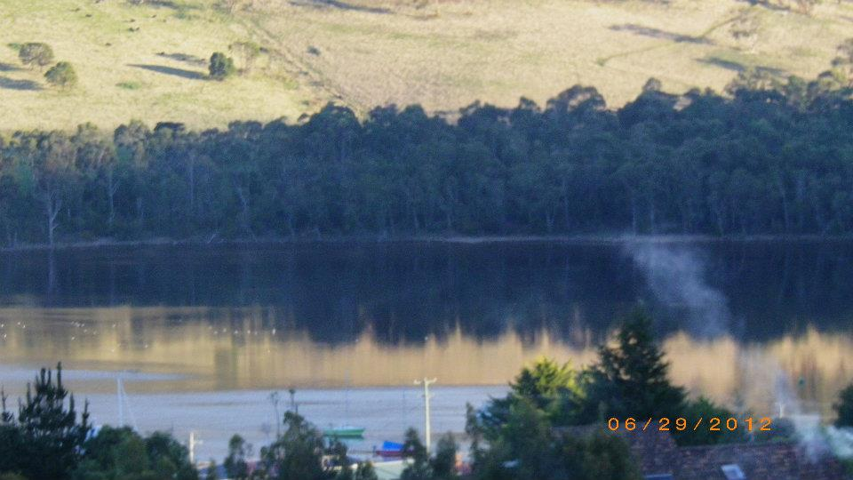
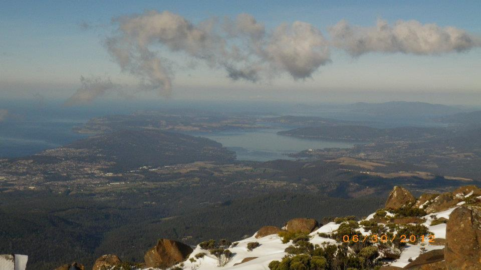
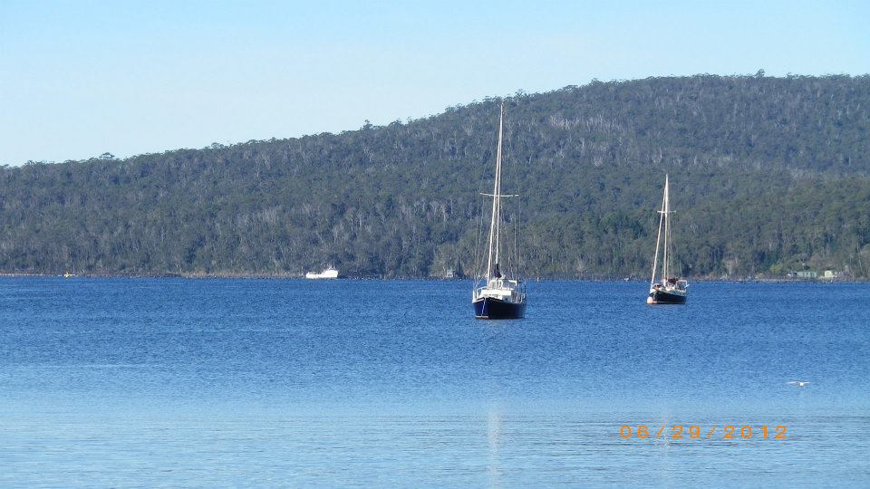

Tasmania completely caught us off guard — in the best way possible. We flew from Sydney to Hobart thinking we were heading for “a nice scenic few days”… and ended up in one of the most jaw-droppingly beautiful places we’ve ever been.
Think dramatic coastlines, empty roads, unreal national parks, and views that make you stop the car every 10 minutes just to take it in.
We landed into Hobart, hopped onto this tour, and basically let Tasmania do its thing. No stress, no overplanning — just pure exploring.
First up: Cradle Mountain. Proper wild. Mist rolling in, lakes that look fake, and that quiet you only get in places that feel untouched.
Then Russell Falls — straight out of a postcard. One of those spots where you just stand there thinking, “how is this real?”
And then came the Bay of Fires. Bright orange rocks, white sand, and that ridiculous turquoise water. Genuinely one of the most beautiful coastlines we’ve ever seen.
But the one that stayed with us? Wineglass Bay. The walk, the view from above, the curve of the beach — it’s the kind of place that makes you stop and just take it in.
If you want to see Tasmania properly without stressing about routes, driving, or planning — this is the one we did.
Book the Tasmania tour →







Weather changes fast here — you need to be ready for everything.
In a heartbeat. Tasmania is one of those places that sneaks up on you — and then you can’t stop thinking about it after.